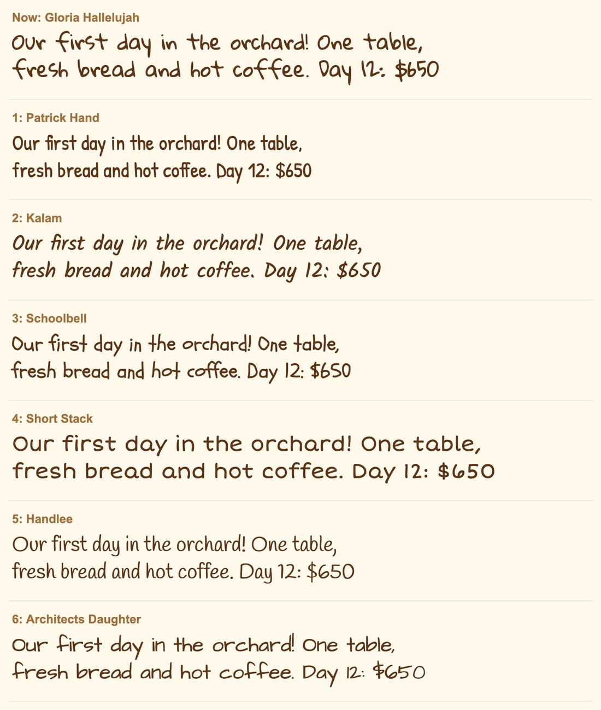
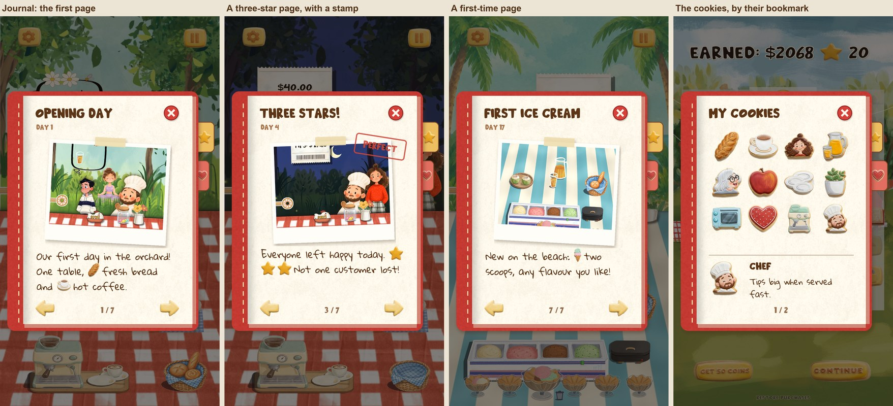
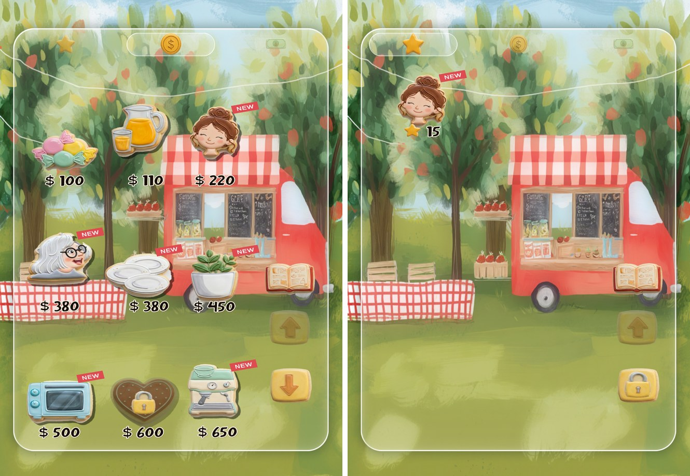
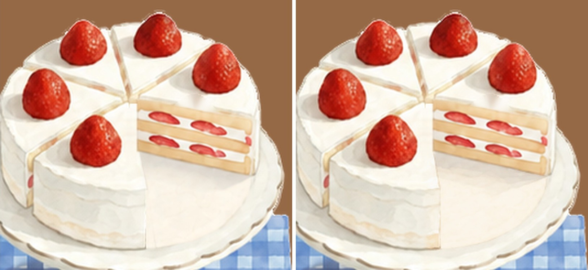
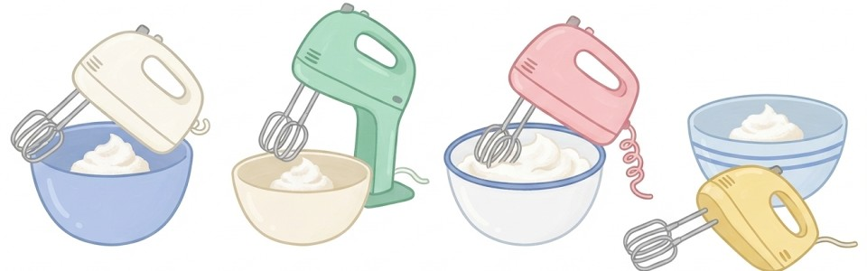

Food Truck Cafe
19 November. 2026.11.18 is live on the App Store; test build 2026.11.19 (0) in TestFlight.
1Next
You
Test build 2026.11.19 (1) is in TestFlight. Four things came after it: the glass shop panel, the cake fix, the smaller Daily Treats button and its even dots. Say "build" for (2).
Q&A: pick a handwriting font; the journal's milestones.
MVP: pick a mixer.
Me
On your font pick: swap it in the shop's popup and the cookie book, and use it in the journal.
2Q&A
The handwriting font: options

- Where the font is used today: two places. The words in the shop's buy popup (the chalk writing), and the description under a cookie in the cookie book. Your pick replaces it in both, and the journal uses it too.
- My pick: 1, Patrick Hand. It still looks written by hand and is the clearest at small sizes. 5 is close but thinner.
- Ticking a number is also your yes to downloading that one font file from Google Fonts (under 1 MB).
The journal: design

- The book: your B, shorter (about 60 % of the screen's height). The open part's bookmark sticks out further.
- A journal page: title, the day it happened, one taped photo, one or two lines with the new thing's cookie inside the text. Fixed per milestone.
- New page: the book's button gets a NEW tag, and the book opens on that page. Pages stay in the order you earned them.
- The pencil here is a stand-in; the real one would be an iced cookie like the others. The handwriting is still the old font until you pick one above.
Milestones I would start with (tick the ones to keep):
The photo on a page:
Pages not earned yet:
3Current
Release 1: the look. The first three cards are in the project but came after build (1).
Shop panel as liquid glass, rounded. After build (1).

- The shop's own background shows through, blurred, under a thin white veil; a bright rim and a soft shadow round the pane.
- The tabs are a glass pill above the pane instead of folder tabs.
Strawberry cake, frame 2: both places fixed. After build (1).

- 1: the line down the left edge of the empty space is gone; the bare plate is there, as in the other frames.
- 2: the pale strip is gone; the cut face ends at one clean edge.
Daily Treats: smaller button, even dots. After build (1).

- Collect and One more treat are smaller and sit higher, clear of the bottom dotted line.
- Every dotted line is redrawn: evenly spaced round dots, one exactly in each corner (two dots overlapped there before).
Day card and cookie book. In build (1).


Build 2026.11.19 (1), the whole list (since 2026.11.18, which is live).
- Paper: Daily Treats (square mint card, four notes), the map's day card (doily), the cookie book as a red book with turning pages.
- Cookies: One more treat, the shop's three tabs, the pull handles (chef's hat on the table, plate in the kitchen: approved).
- Shop: 1 star for 999 coins; coffee machine upgrade 650; a crunch on the book's cookies.
- Tutorial and arranging: the hand drags the real coffee machine and coffee bags; "drag to arrange" banner on day 2 only, low in the kitchen; NEW on the cups only for the cups; the table's handle movable at any time; the coffee bags glow while arranging.
- Play: 2 stars at 80 %; Daily Treats only after the first tutorial; Apple's rating popup after day 3 (never shows in TestFlight); the strawberry cake's new frames.
- Still to do for the release: new store screenshots and video with caption style B; your What's New words.
4MVP
Release 2, this weekend: the kitchen flow, with a baking mixer and the journal. Waiting for your flow.
A mixer for baking: drafts.

- All six are Gemini's. The game has no mixer picture I could build my own from; say the word and I paint some too.
5Backlog
Nothing open.
6Analysis
Nothing open.
7Marketing
Nothing open.